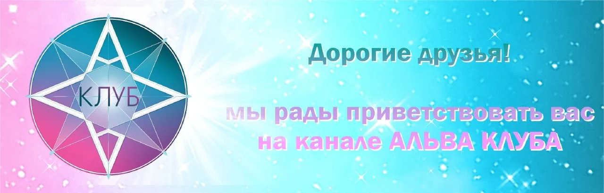

Пространство для формирования нового сознания

АЛЬВА КЛУБ – это пространство для формирования нового сознания людей, осознающих свое человеческое цивилизационное единство, единство всех людей, всех существ, всей Вселенной, всего космоса, Мироздания, творения и Творца.
Мы приглашаем к сотворчеству, принятию и пониманию – развиваться вместе в безопасной среде.
Альвы – космическая цивилизация, «пришедшие из точки Альва». Их также называли гипербореями. Столица их располагалась у географического полюса и именовалась Пола («покой»). В греческих источниках город называли Ортополис – «город Вертикали, город Земной Оси». Расположение выбиралось для оптимальной коммуникации с космосом.
Один из самых успешных проектов Клуба. Назначение проекта – создать среду, где каждый может быть самим собой: раскрыть творческий потенциал в атмосфере поддержки и реализовать свои идеи.
Мы открыты к любым идеям, учимся новому и принимаем всех участников. Литература, визуальное искусство, цифровые проекты, организационные инициативы – любые формы творчества.
Проект создан для обмена впечатлениями, фотографиями, советами, привезенными участниками Школы из различных путешествий.
В планах – организация совместных ретритов и познавательных поездок в уникальные места страны.
Совместные просмотры и разбор фильмов. Медиатека с фильмами доступна участникам в Банке интеллектуальных тренировок.
Канал клубаУправленческие программы на природосообразной основе. Ведущий программы «Управленческий Консилиум» – Эдуард Кондратьев.
@KondratyevEVПроекты друзей и участников Клуба, которые мы поддерживаем и в которых участвуем.
Общероссийская организация «Центр содействия по сохранению, развитию и популяризации культурных гастрономических традиций, здорового питания и образа жизни, биологического разнообразия, органического сельского хозяйства».
Мир, где все люди имеют доступ к качественным продуктам питания и получают удовольствие от еды, которая полезна для них самих, выгодна для производителей и не приносит вреда планете.
Вкусно – свежие натуральные ароматные сезонные продукты местной культуры. Чисто – производство без вреда окружающей среде и здоровью. Честно – доступные цены и справедливая оплата труда производителям.
Отделения открыты в 47 регионах России. Международный проект «Ковчег Вкуса» – каталог редких продуктов и сортов растений, более 5140 продуктов со всего мира.
Полифонический хор создан в 1987 году выпускниками Московской консерватории им. Чайковского Олегом Кузнецовым и Еленой Локшиной как хор МПГУ. Более 15 лет концертировал в престижных залах Москвы, гастролировал по России и за рубежом. С 2011 года работает под названием «Полифонический хор».
Репертуар: И. С. Бах, С. И. Танеев, Д. Бортнянский, С. Дегтярев и другие композиторы. Лауреат 1 степени XXIV Московского международного конкурса духовной музыки «Рождественская Песнь» (2023).
Неформальное общественное объединение взрослых и детей, помогающих сохранению заповедной природы и культурного наследия России. Создано Эколого-просветительским центром «Заповедники» – объединением профессионалов заповедного дела, которое более 25 лет работает в экологическом просвещении и поддержке особо охраняемых природных территорий (ООПТ).
Связанная организация – благотворительный просветительский фонд «Заповедное посольство», аккумулирующий ресурсы и знания профессионалов для поддержки ООПТ.
«Давайте дружить и помогать природе вместе!»
Раздел формируется. Развитие физических качеств человека, восточные единоборства, цигун и тайцзицюань – с тренерами Академии Екатериной Галани, Эдуардом Кондратьевым и Ренатом Загидуллиным.
Энийога